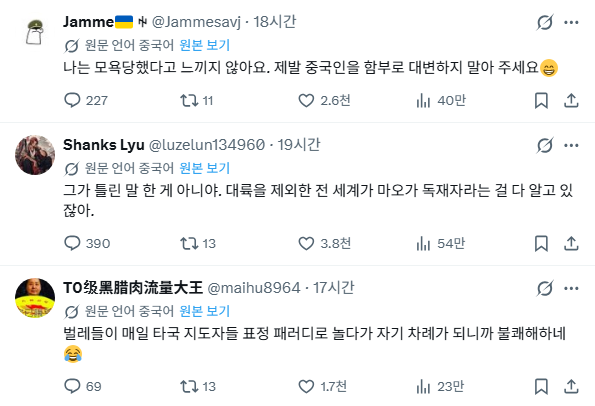
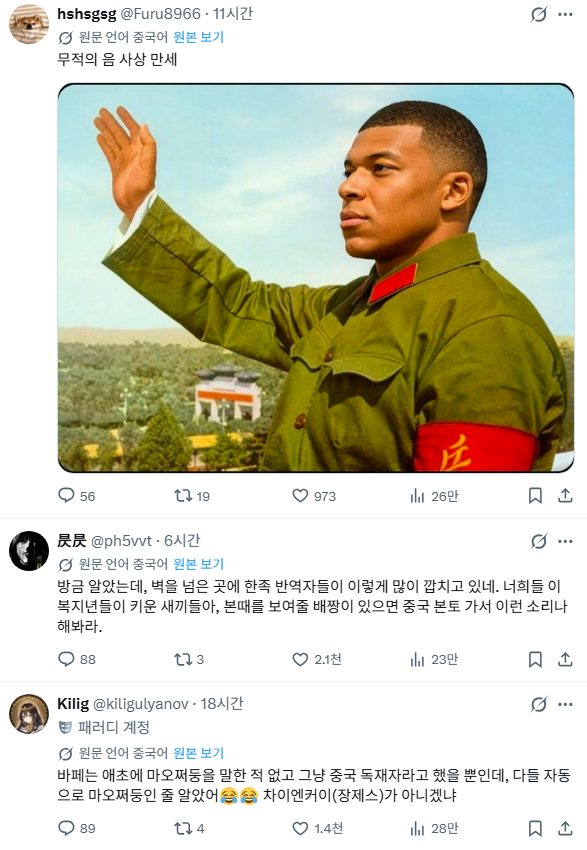
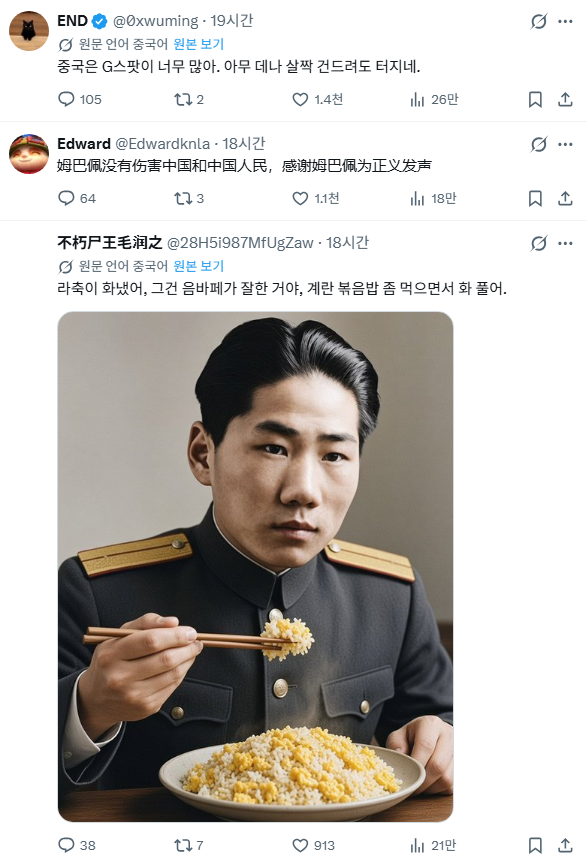
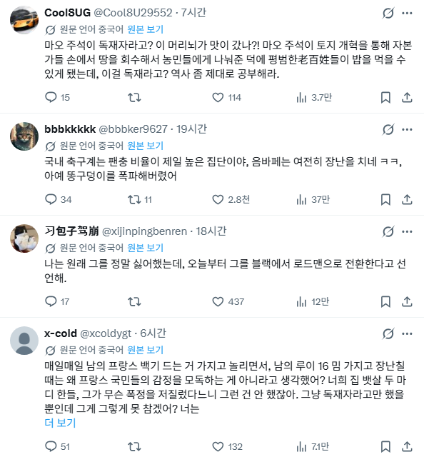

프랑스 축구 스타 음바페가 자신에게 가장 마음에 드는 밈은 중국 독재자 마오쩌둥이라는 발언을 했습니다.
10월 26일, 프랑스 축구 스타 음바페가 한 인터뷰에서 "자신의 얼굴이 사용된 가장 웃긴 밈"에 대해 물었을 때, 그는 이렇게 답했습니다:
"가장 웃긴 건 제 얼굴을 중국 독재자(마오쩌둥) 얼굴에 붙인 그 밈이에요. 온라인에서 친구들과 플레이스테이션을 할 때 자주 쓰는 밈이죠."





"중국은 G스팟이 너무 많아 아무데나 살짝 건드려도 터지네" 시발 ㅋㅋㅋㅋㅋ